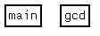

November 23, 1998.
updated October 19, 2002
Ulrich Drepper has contributed support for automatic generation of graphical flow graph representation.
GCC now contains some code which allows to emit information to allow a graphical representation of the flow graphs.
Traditionally GCC has the capability to dump information about all the instructions, basic blocks and the connections between them in textual form. This serves the purpose quite well but following the logic of the program is quite complicated and often requires drawing the flow graph on paper. This is annoying especially since the compiler already has all the information.
Quite a few programs exist that draw graphs from textual input, and we certainly accept patches to support free ones.
First you should get an impression on what the program and the gcc changes do. Take the following small program.
int
gcd (int v1, int v2)
{
int l = v1 < v2 ? v1 : v2;
int h = v1 + v2 - l;
while (h > l)
{
h -= l;
if (h < l)
{
int tmp = l;
l = h;
h = tmp;
}
}
return h;
}
int
main (int argc, char *argv[])
{
int v1 = atol (argv[1]);
int v2 = atol (argv[2]);
printf ("gcd(%d, %d) = %d\n", v1, v2, gcd (v1, v2));
return 0;
}
If you want to understand how GCC translates this
programs you use the -d option to select what GCC
should dump. E.g., giving GCC the option -da dumps
the files:
# ../cc1 -O2 -o test.o test.c -da gcd main time in parse: 0.010000 [... some lines removed ...] # ls test.c.* test.c.addressof test.c.cse2 test.c.jump test.c.regmove test.c.stack test.c.bp test.c.flow test.c.jump2 test.c.rtl test.c.combine test.c.gcse test.c.loop test.c.sched test.c.cse test.c.greg test.c.lreg test.c.sched2
These files are kind of hard to read if you are not used to
RTL. Example? This is a part of test.c.lreg:
[... some lines removed ...]
Basic block 5: first insn 25, last 27.
Registers live at start: 6 7 24 25
Basic block 6: first insn 59, last 63.
Registers live at start: 6 7 25
(note 2 0 4 "" NOTE_INSN_DELETED)
;; Start of basic block 0, registers live: 6 [bp] 7 [sp] 16 []
(insn 4 2 6 (set (reg/v:SI 22)
(mem:SI (reg:SI 16 %argp) 1)) 54 {movsi+2} (nil)
(expr_list:REG_EQUIV (mem:SI (reg:SI 16 %argp) 1)
(nil)))
(insn 6 4 7 (set (reg/v:SI 24)
(mem:SI (plus:SI (reg:SI 16 %argp)
(const_int 4)) 1)) 54 {movsi+2} (nil)
(expr_list:REG_EQUAL (mem:SI (plus:SI (reg:SI 16 %argp)
(const_int 4)) 1)
(nil)))
(note 7 6 8 "" NOTE_INSN_FUNCTION_BEG)
(note 8 7 10 "" NOTE_INSN_DELETED)
(note 10 8 12 0 NOTE_INSN_BLOCK_BEG)
(insn 12 10 13 (set (reg/v:SI 23)
(reg/v:SI 24)) 54 {movsi+2} (insn_list 6 (nil))
(nil))
[... more lines removed ...]
All the information about the basic blocks and the instructions and so on is available but not the the most human friendly form.
This is where the new GCC features come into play.
If you add the option -dv to your
commandline you get a handful of extra files:
# ../cc1 -O2 -o test.o test.c -da -dv gcd main time in parse: 0.010000 [... some lines removed ...] # ls test.c.*.vcg test.c.addressof.vcg test.c.cse2.vcg test.c.jump.vcg test.c.regmove.vcg test.c.bp.vcg test.c.flow.vcg test.c.jump2.vcg test.c.sched.vcg test.c.combine.vcg test.c.gcse.vcg test.c.loop.vcg test.c.sched2.vcg test.c.cse.vcg test.c.greg.vcg test.c.lreg.vcg test.c.stack.vcg
If you view these files using a suitable program, you'll get output similar to the following:
These are nodes representing all the functions in the file. If you expand the nodes you can get a picture like this.
If you have GCC later than 2.92.22 you have the necessary changes to the compiler.
{kind=link}